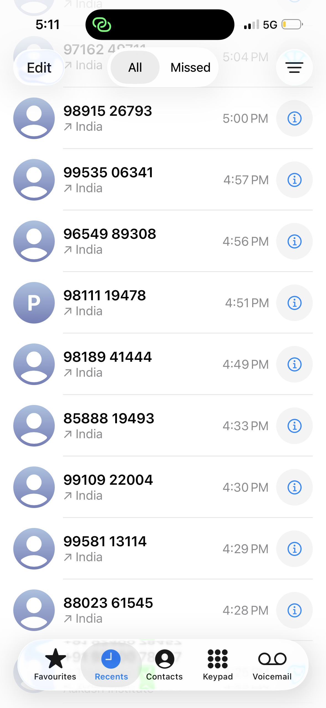
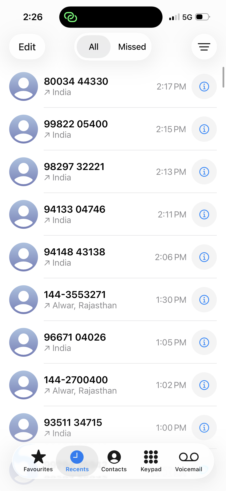
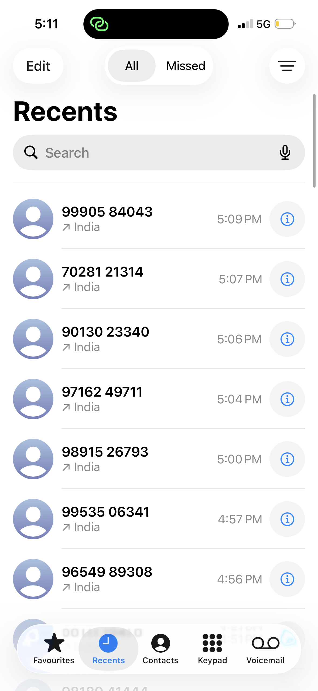
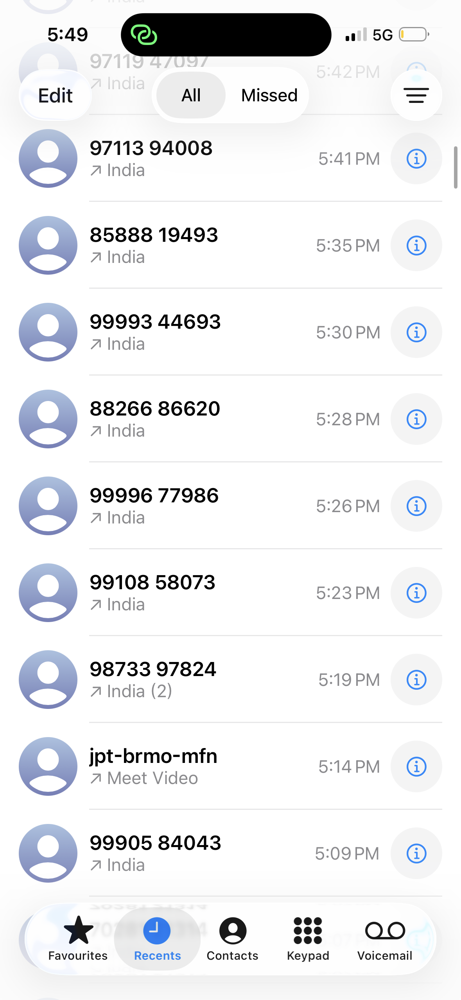
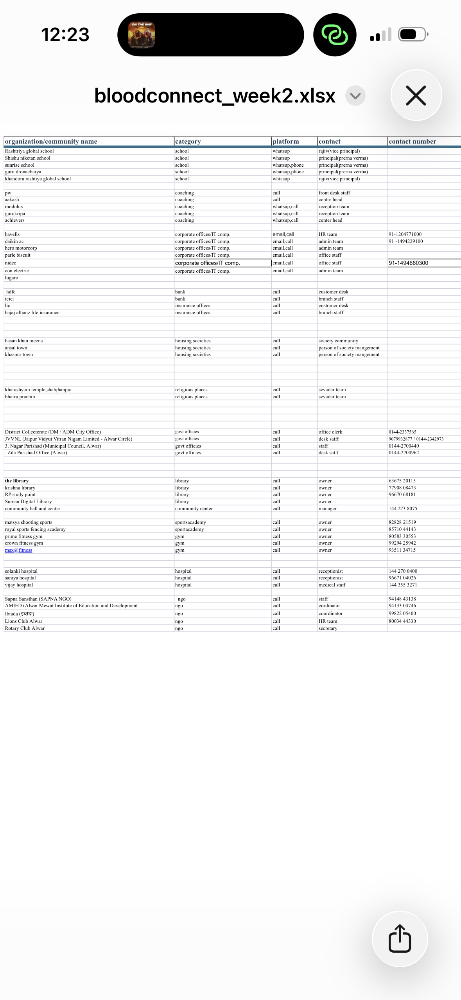
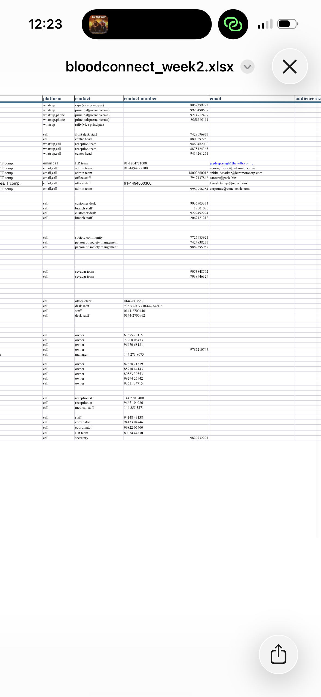

This week was all about hardcore networking. I successfully made over 80+ telephonic outreach calls targeting coaching centers , hosiptals , religious places, local NGOs, and schools across my network to pitch awareness sessions.




Making calls is only half the battle; tracking them is where the real impact happens. To ensure no lead was lost, I meticulously maintained a comprehensive Excel database.
I categorized over 50+ organizations—including corporate offices, coaching institutes, government offices (like the District Collectorate), and hospitals. This structured approach made it significantly easier to plan follow-ups and pitch future blood donation camps.

